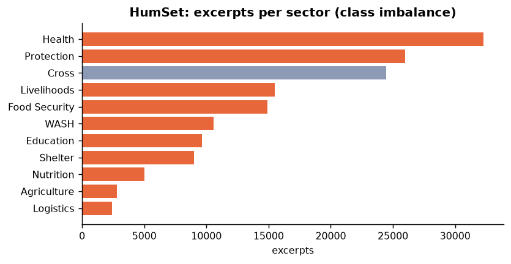
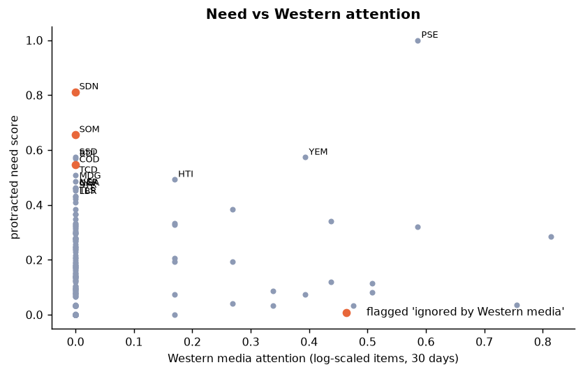

STK Asistanı: An AI Crisis Monitor and Campaign Recommender that Directs NGO Aid to Acute,
Protracted and Under-Reported Crises Using Independent Data Sources
2) Overview
STK Asistanı ("NGO Assistant") helps small and medium-sized Turkish NGOs
(sivil toplum kuruluşları, STK) decide where to run their next aid campaign, what it
should contain and with whom to partner. It reads open data and news continuously and classifies every
report into humanitarian sectors with a machine-learning model that keeps retraining itself. It then ranks crises
against the NGO's own areas of work.
A defining design choice is source independence. The tool relies on academic datasets (Uppsala Conflict Data
Program), an NGO-produced index (Global Hunger Index), the Red Cross / Red Crescent movement (IFRC),
open casualty data from Gaza (Tech for Palestine), science agencies (USGS, NASA) and fifteen independent and Global-South
news outlets. Western mainstream media are collected only to measure which crises they ignore. Results are shown
on an interactive world map with a transparent, user-weighted priority score. For each location the assistant
recommends direct response or partnership with local organisations, starting with the country's Red Crescent
or Red Cross society. An LLM (DeepSeek) then drafts a campaign proposal, restricted to the verified facts it receives.
Who it helps and with what (one sentence): STK Asistanı helps NGO programme and fundraising teams
find the most urgent and most overlooked crises in their sectors, using independent evidence, and turn them into
campaigns and local partnerships. SDG link: SDG 17.17 (civil-society partnerships), SDG 16.1 (reduce violence and related deaths: conflict data
drives priority), SDG 2.1 (end hunger), SDG 1.5 / 11.5 (disaster resilience); cross-cutting SDG 10 (no crisis left behind).
Fig. 0 — What the user puts in and what the tool produces.
3) Background
Turkish civil society has a long record of humanitarian work in Syria, Gaza, Sudan, Somalia, Afghanistan and in the
2023 earthquakes. Most NGOs, however, are small. They lack analysts who can follow dozens of crises, so campaign
decisions tend to follow the news cycle. That cycle is uneven. Our own data from the last 30 days show it clearly:
Ukraine and Russia account for 38% of the country-tagged world news of BBC, The Guardian and The New York Times,
while Sudan, DR Congo, Somalia, Syria and Lebanon receive 0%. Yet Sudan alone recorded 89,846 conflict deaths in the
past three years (UCDP). Palestine receives 12.5% of independent outlets' coverage but only 3.3% of Western coverage
(Fig. 3).
Data infrastructure is uneven too. Prioritisation tools often rely on a single institutional data ecosystem, which
reflects its own blind spots: populations that are not counted, conflicts that are not classified as emergencies, crises
that are not funded. In a first version of this project, built on one such ecosystem, Gaza was under-ranked for exactly
these reasons. The lesson shaped our design. We use multiple independent sources, record every known data gap
explicitly, never treat missing data as "no need", and let the user see and weight each component.
Recent NLP work makes automation feasible. The HumSet dataset (Fekih et al., 2022) provides 148k humanitarian
text excerpts annotated by experts with sectors and crisis dimensions. We use it only as training text for the
classifiers, never as evidence about where needs are.
4) Key Objectives / Business Objectives
a) Research Questions:
How accurately can a lightweight multilingual classifier assign humanitarian sectors and casualty / displacement signals
to live news, compared with a keyword baseline? How large is the gap between languages?
Does self-training on confidently classified new articles (plus human corrections) adapt the model to current crises
without degrading accuracy on expert-labelled data?
Can a priority score built only from independent sources (UCDP, GHI, IFRC, Gaza MoH data, independent news)
produce a credible ranking of acute and protracted crises?
How large and how systematic is the coverage gap between Western mainstream and independent / Global-South media,
and can it be used to flag ignored crises?
How reliably can an LLM write campaign proposals grounded only in supplied facts, and can rule-based validation catch
invented numbers or organisations?
b) Key Steps:
Ingestion pipeline for UCDP, GHI, IFRC GO, Tech for Palestine, USGS, NASA EONET and 18 RSS feeds (done).
Sector and crisis-dynamics classifiers trained on HumSet, with a self-training loop and accuracy guard (first version done).
Country indicators, user-weighted priority score and "ignored by Western media" flag (first version done).
Interactive map with NGO profile, ranking, country dossier, Gaza casualty panel and partner list (prototype done).
DeepSeek integration (OpenAI-compatible API via OpenRouter) for grounded campaign drafting with a validator.
Hand-label ~200 current (2026) articles to measure the real effect of self-training. Extend the news gazetteer and add
more regional outlets (Somalia, Sahel, Myanmar).
Test with NGO personas (sector, size, home country). Document source disagreements and biases.
5) Methods and Workflow
a) Datasets:
Source (publisher, type)
Content & size
Role
HumSet (DEEP / Data Friendly Space; Apache-2.0)
148,621 excerpts, EN/FR/ES, expert labels for 11 sectors
and crisis pillars
News RSS: Al Jazeera, Middle East Eye, Anadolu, Yeni Şafak, Daily Sabah, The New Arab, MEMO, Mondoweiss,
Radio Dabanga, Ariana News, Amu TV, Dawn, Africanews, MSF, Amnesty (+ BBC, Guardian, NYT for comparison)
638 items in the first run (503 independent, 135 Western), accumulated daily
Classifier input, attention gap, self-training
b) Data Cleaning and Preprocessing:
HumSet: removed the 22.5% of excerpts without sector labels. Mapped 11 sectors to our 10-sector taxonomy and binarised
the labels (1.11 labels per excerpt after mapping). Kept the official split. Health has 13× more examples than Logistics,
so we used class weights and per-class thresholds tuned on validation.
UCDP: merged the final dataset with 2026 monthly candidate releases. Gaza and West Bank events, which UCDP codes
under Israel, are re-assigned to Palestine by admin-1 (8,478 events, about 64,000 deaths). Country names harmonised to ISO-3. For Palestine the Gaza Ministry of Health is the primary source (registered deaths by name and ID, via Tech for Palestine): 74,392 killed in Gaza, 463 starvation deaths and 1,124 killed in the West Bank, 75,979 in total. UCDP verifies deaths case by case through media reports and undercounts where journalists are killed and access is blocked (UCDP: about 64,000). The Ministry publishes no civilian/combatant split; children and women (32,679) are the only published breakdown and are used as a strict lower bound of civilian deaths, which does not imply that the others were combatants. People missing under rubble and deaths from disease are not in any registry, so all figures are minimums.
GHI: parsed the Excel release ("<5" → 2.5). Countries with incomplete data get GHI's provisional category at the range midpoint (Sudan, South Sudan, Yemen, Burundi: "alarming", 35–49.9 → 42.5). GHI does not cover Palestine, so documented starvation deaths (Gaza MoH) are used instead.
News: HTML stripped, duplicates removed. Countries tagged with a gazetteer of country and crisis place names
(e.g. Rafah, El Fasher, Goma). Demonyms are used only when no place is named, so reports are attributed to the place
where people are affected (74% of items tagged).
Normalisation: conflict intensity is measured as deaths per 100,000 people on a linear scale (500 per 100k over three
years = maximum). An earlier log scale hid a 100-fold gap: Palestine has 1,622 deaths per 100k, Israel 16. Alerts decay with a
10-day half-life. Countries absent from UCDP count as zero recorded conflict deaths. Other missing values stay unknown,
and each country shows a data-coverage indicator.
News signal: only articles above the casualty classifier's tuned threshold (0.55) count, and each outlet's contribution
per country is capped, so that one national newspaper cannot dominate. A news-only signal that UCDP or Gaza MoH data do not
corroborate can contribute at most 0.5, so a single tragic incident does not equal a sustained mass-casualty crisis. The mix of
news topics never lowers a measured need, and an unknown funding gap is treated as neutral (0.5), never as a penalty.
EDA highlights
Fig. 1 — Conflict deaths, last 3 years (UCDP).

Fig. 2 — HumSet class imbalance.
Fig. 3 — Coverage of the 15 highest-need crises: independent vs Western media.

Fig. 4 — Need vs Western attention; orange = flagged as ignored.
Key insights. (i) The deadliest conflicts of the last three years are Ukraine, Sudan and Palestine.
(ii) 44 countries have a "serious" or worse hunger score (GHI ≥ 20, including provisional categories). (iii) Active Red Cross / Red Crescent appeals are only 51%
funded. (iv) Among the highest-need crises, DR Congo, Somalia and Sudan receive no Western coverage at all in the sample period and are flagged as ignored. (v) HumSet annotations date mainly from 2019–2020
(76% from 2020), so live 2026 news will drift; this motivates self-training. Caveat: the Western sample is still small
(90 country-tagged items); it grows daily.
Descriptive statistics. Deaths per 100k are extremely right-skewed (skew 11; median 0, max 1,622).
A log scale would reduce the skew but compressed a 100-fold gap between Palestine and Israel, so a capped linear per-capita
scale is used instead. Spearman correlations show one pair above |ρ| ≥ 0.85: civilian harm and conflict intensity (0.91).
Both are kept on purpose, because they answer different questions (who is killed vs how many).
c) Modelling:
Sector classifier: TF-IDF (word 1–2-grams, 300k features) followed by one-vs-rest logistic regression with class weights
and per-sector thresholds. On the HumSet test set (12,384 excerpts) it reaches micro-F1 0.780 / macro-F1 0.740, against
0.558 / 0.539 for a keyword baseline. By language, macro-F1 is 0.75 for EN, 0.72 for FR and 0.62 for ES.
Crisis-dynamics classifier: same architecture, trained on HumSet's 1D pillars (43,719 annotated excerpts): macro-F1 0.64,
Casualties F1 0.63. The decayed sum of P(casualties) over the last 14 days of independent reporting gives a real-time
violence signal that complements UCDP's two-month publication lag.
Self-training: news classified with confidence ≥ 0.90 (max 3,000 items) plus human corrections from the UI are added to
training. A new model is accepted only if expert-test macro-F1 does not drop by more than 0.005.
Priority score: protracted suffering = half the worst civilian dimension (civilians killed per 100k or hunger) plus half the weighted mean of civilian harm (2), conflict intensity (1) and hunger (1.5). Separating civilian harm
matters: per 100k people, at least 703 civilians were killed in Palestine and 173 in Sudan over three years, against 17.5 in Ukraine,
where 97% of recorded deaths are combatants. Acute need is the maximum of natural-hazard alerts multiplied by vulnerability (vulnerability = the higher of the hunger level (GHI does not score high-income countries, which have no hunger problem) and ongoing violence; an earthquake in a state that copes on its own, such as the USA, scores zero), new IFRC appeals and recent violence (UCDP 90 days,
Gaza MoH 30 days, news signal). Sector needs are derived from sector-relevant indicators. The user sets all weights with sliders.
Trajectory (worsening vs easing): for every country the mean of the last 3 months of conflict deaths is compared with the
median of the 12 months before (robust to a single massacre month) and with the previous quarter. Labels: worsening
(≥ 1.5× the usual level, ≥ 50 deaths/month, not falling vs the previous quarter), chronic and improving (only below
20 deaths/month). A clear drop while killing continues (≥ 100 deaths/month or heavy violence in ≥ 9 of 12 months) gets no label. A drop in recorded deaths is never called improvement while people are still being killed; recent UCDP months are
preliminary and usually revised upwards. Current result: Yemen ×9 (Aug 2026: 1,380 deaths), Nigeria, South Sudan, Pakistan and Colombia
are worsening. Escalation is a user-weighted bonus that only adds to the score (a crisis that is not worsening is never pulled down) and a dedicated "worsening lens" for early action.
Hunger trend: GHI 2018 → 2026.
Aid presence relative to need: humanitarian aid per person in severe need = OECD humanitarian aid (2023–2024 average)
÷ (population × the part of protracted suffering above 0.3). $5 or less per person → gap 1, $300 or more → 0 (log scale).
Computed only for recognised crises (protracted ≥ 0.45 or an active IFRC Emergency Appeal), so that large states with their own systems
are not counted as gaps. Two corrections: Türkiye reports the cost of hosting Syrian refugees in Türkiye as aid to Syria (USD 6–10 bn/yr);
this real burden is excluded because it is not aid present inside Syria. And money disbursed is not aid delivered: where starvation deaths
are documented (Gaza: 463, plus 2,615 killed while seeking aid), the gap is scored high regardless of budgets. Result: Burundi and Nigeria
receive about $12 per person in severe need, Sudan and DR Congo under $40, against $220–540 in Somalia, Afghanistan and Syria.
Place-specific sustainable projects: for the selected country, every province (Natural Earth admin-1) gets a profile:
conflict deaths in the last 12 months (UCDP events assigned to the nearest province), last year's rainfall, temperature and elevation
(Open-Meteo, ECMWF ERA5), and news naming it. A security level (low / medium / high) decides whether livelihood projects are feasible
or only emergency aid through a partner. A crop–climate table (21 crops; coarse thresholds, flagged for agronomist confirmation) and a
catalogue of 16 sustainable project types, each with procurement items, a self-sustaining mechanism (seed bank, pass-on livestock,
cooperative, water committee) and risks, are matched to each province. The LLM then drafts a full proposal from these facts plus an
optional field note from the NGO. Example: Herat (300 mm rain, 17 °C) matches saffron, almond, pomegranate and grape; Kabul (293 deaths
in 12 months) gets emergency food and psychosocial support instead.
Campaign generation: DeepSeek (deepseek/deepseek-v4.1-flash via OpenRouter, ≈ $0.001 per campaign; free fallback model)
receives a JSON block of facts with named sources. A validator removes organisations that are not among the candidates, flags
numbers that do not appear in the facts and keeps only supplied URLs.
Where the data is: the final dataset is data/final/country_crisis_dataset.csv (177 countries × 38
columns: raw indicators, normalised components, scores), documented column by column in data/final/DATA_DICTIONARY.md;
labelled news items are in data/final/news_labelled.csv. Every cleaning and transformation step, with its outputs, is
shown in notebooks/01_dataset_and_preprocessing.ipynb.
d) Deliverables:
A working prototype: Python pipeline and Flask server with an interactive MapLibre world map (TR/EN), running on live data.
Evaluation report: classifier comparison (keyword vs TF-IDF vs multilingual transformer vs LLM zero-shot), self-training study on a
2026 test set, ranking sanity checks, attention-gap analysis and LLM grounding error rate.
Ethical assessment: source bias and independence, language bias, self-training drift, hallucination, partner due diligence,
dignity in messaging.
Open-source GitHub repository with README, source documentation and reproducible scripts.